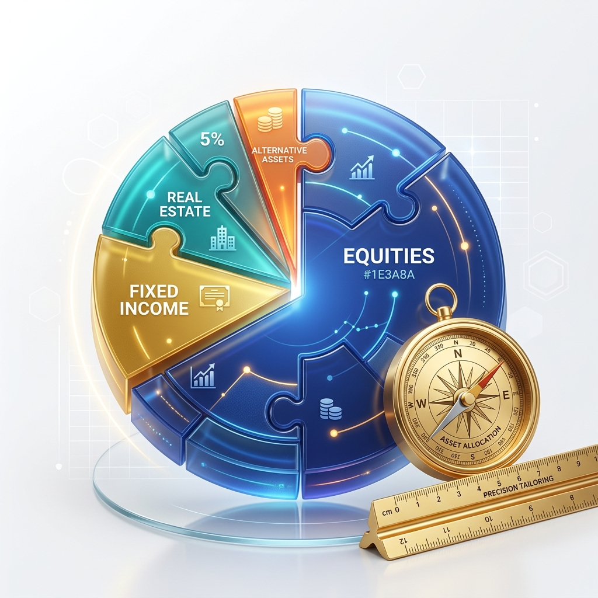

客製化資產配置的吸引力與優勢
市場上充斥著各種投資建議，但沒有一套方案能適用於所有人。真正的財富管理，是從您的**個人財務狀況、人生階段、風險承受度**以及**明確的財務目標**出發。客製化資產配置服務，正是為了解決這個痛點，確保您的每一筆投資都與您的長期目標保持一致。
- 目標導向的規劃：所有配置都圍繞您的特定人生目標，而非盲目追逐市場熱點。
- 風險可控的組合：確保投資組合的波動性在您的舒適範圍內，讓您睡得安穩。
- 靈活調整的方案：隨著人生階段的變化（如結婚、生子、退休），配置方案可隨時調整。
- 專業陪伴的服務：劉怡汎專員將成為您長期的財務夥伴，提供持續的專業支持。
我們的服務流程：四個關鍵步驟
- 深度財務盤點與目標設定：
透過一對一諮詢，全面了解您的資產、負債、現金流，並明確定義您的財務目標（如退休金準備、子女教育基金、購屋計畫、財富傳承等）。
- 風險屬性評估與投資組合設計：
根據您的風險承受能力和目標期限，設計出最優化的資產配置比例。我們將涵蓋股票、債券、基金、ETF、衍生性金融商品等多元工具，以達到風險分散、效率最大化的目的。
- 執行與持續監控：
協助您將規劃落實到實際的投資操作中。更重要的是，我們會定期（如每季或每半年）對投資組合進行績效檢視，並根據市場變化和您的生活變動進行必要的再平衡（Rebalancing）。
- 稅務與傳承優化建議：
在資產配置的同時，提供稅務優化和財富傳承的初步建議，確保您的財富能更有效率地傳承給下一代。
立即開始您的專屬財務規劃
無論您是剛開始累積財富的年輕人，還是準備規劃退休生活的高資產人士，客製化資產配置都是實現財務自由的基石。立即聯繫劉怡汎專員，開啟您的專屬財務藍圖！